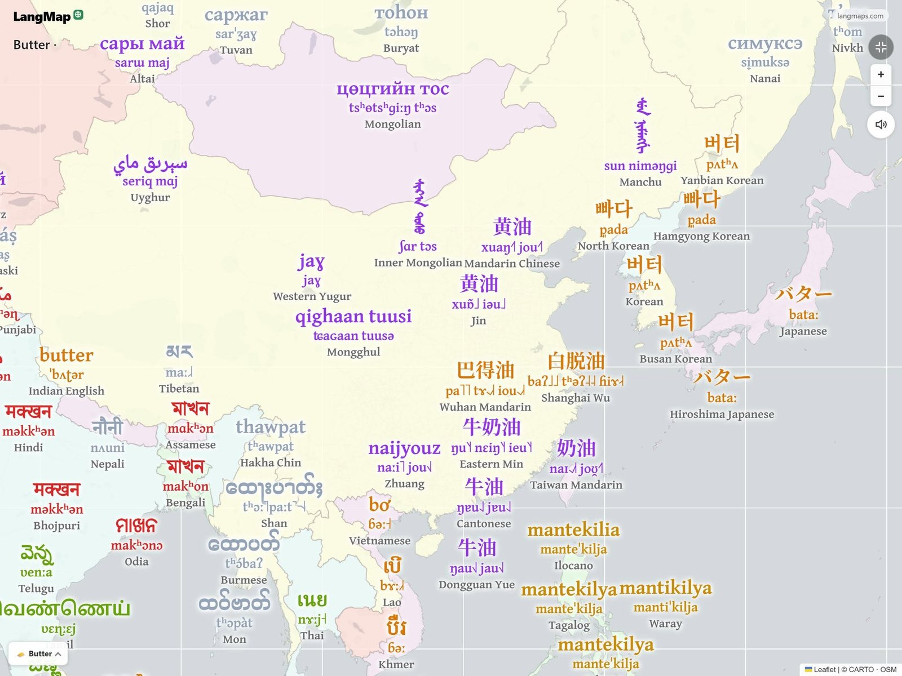

Butter: One Food, Many Histories
- In Japan and Korea, butter sounds English. In Vietnam, it sounds French. In the Philippines, it sounds Spanish.
- In Chinese, the same butter can be called "yellow oil," "cow oil," or "milk oil," depending on where you are.
- But thousands of years before these modern names, butter already had a place in the religions and cultures of Asia.

Contents
One food, three European languages
Look at the butter map of East Asia.
Japan says:
バター (batā)
Korea says:
버터 (beoteo)
Both reflect English butter.
But move south to Vietnam, and the word suddenly changes.
bơ
It comes from French beurre.
And in Cambodia, បឺរ (beur) also comes from French.
Travel farther to the Philippines, and you encounter:
mantikilya
From Spanish mantequilla.
The same everyday food reveals three different histories of European contact.
English in Japan and Korea. French in Vietnam and Cambodia. Spanish in the Philippines.
You can almost see history written across the map.
China: Three names for the same butter
Now look at Chinese.
In mainland Mandarin, butter is commonly called:
黄油 / 黃油 (huángyóu)
Literally, "yellow oil."
But in Hong Kong Cantonese, it is:
牛油 (ngau4 jau4)
"Cow oil."
And in Taiwan, it is usually:
奶油 (nǎiyóu)
"Milk oil."
Three names, three ways of describing the same food.
But be careful!
In mainland Mandarin, 牛油 often means beef fat, while 奶油 commonly refers to cream.
The same Chinese characters can lead you to very different ingredients.
A recipe from Hong Kong might need some explanation in Beijing.
Beyond the borrowed words
But the map changes again as we travel toward the Himalayas and the grasslands of Central Asia.
In Tibetan:
མར (mar)
Butter has long been part of daily life, including traditional butter tea.
In Mongolian:
цөцгийн тос (tsötsgiin tos)
Literally, "cream fat" or "cream oil."
And across northern India, Hindi मक्खन (makkhan) belongs to a much older South Asian dairy tradition.
Here, butter is not simply a European food with a borrowed European name.
It belongs to cultures that have processed milk for centuries.
Japan's forgotten butter connection
And here comes an unexpected twist.
Modern Japanese calls butter バター, a Western loanword.
But ancient Japan already knew about sophisticated dairy products through Chinese and Buddhist traditions.
One particularly precious refined milk product was called:
醍醐 (daigo)
In Buddhist writings, it represented the finest essence obtained from milk, often compared to clarified butter or an especially refined dairy preparation.
It was considered the highest taste.
And that ancient idea survives in a familiar Japanese expression:
醍醐味 (daigomi)
Today, it means the real pleasure or essence of an experience.
Most Japanese speakers use the word without thinking of milk at all.
A word once associated with the finest dairy product became a metaphor for life's greatest pleasures.
A little butter, a lot of history
An English word in Japan and Korea.
A French word in Vietnam and Cambodia.
A Spanish word in the Philippines.
Three different Chinese names for one ingredient.
And ancient dairy traditions stretching from India to Tibet and Mongolia.
Even Japan's everyday word daigomi preserves a distant memory of refined milk.
Butter may look like a simple food. But its names tell the story of trade, religion, language contact, and centuries of cultural exchange.
Sometimes, all it takes to discover history is a slice of bread and a little butter.